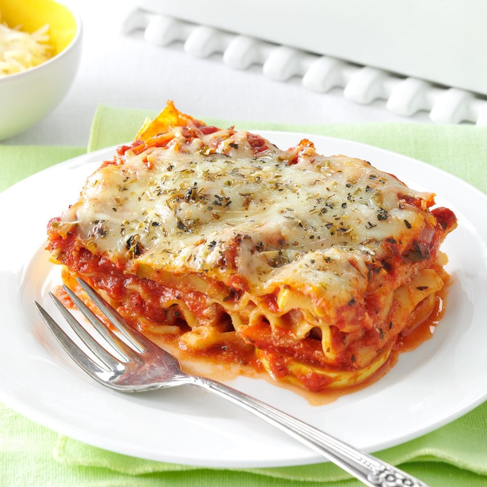

Quick and Easy! Homemade lasagna
INGREDIENTS
- Beef : ground beef is fine or ground turkey
- Spaghetti Sauce : store-bought is fine
- Cheeses : cottage cheese, mozzarella, and parmesan
- Eggs
- Seasonings : dried parsely, sal, and black pepper
- Lasagna Noodles
- Water : half a cup; pour around the edges of the baking dish before baking
Steps
- Cook and drain the meat of your choice, then stir in the spaghetti sauce and simmer
- Combine the cottage cheese, 2 cups of mozzarella, eggs, half of the parmesan, and seasonings
- Assemble the Lasagna
- Bake, covered, for 45 minutes
- Uncover and bake fore 10 minutes